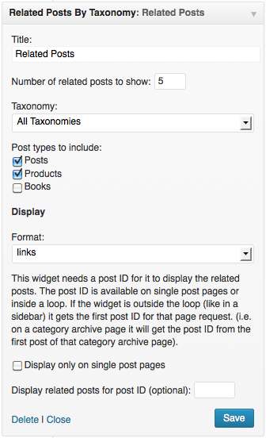

This lightweight plugin provides a widget and shortcode to display related posts by taxonomies as links, full posts or excerpts.
Choose from single or multiple taxonomies and search for related posts in multiple post types. Posts that have the most terms in common will display at the top (also ordered by date). It's easy to override the look of the widget or shortcode with a filter or by including your own templates in your theme. It's also possible to get the related posts by using a function in your theme template files.
Use the links below to navigate to a specific section in the documentation:
related-posts-by-taxonomy.zip folder.related-posts-by-taxonomy folder to your /wp-content/plugins directory.The widget settings are very self-explanatory.

The display settings
You can choose from three different display formats:
To override the template used for these formats see: Templates
For more information about the post ID and the widget outside the loop see Usage outside the loop.
If the widget is used outside the loop (like in a sidebar) and no post ID is provided in the widget's settings it gets the first post ID for that page request (e.g. on a category archive page it will get the post ID from the first post of that category archive page).
Custom queries with WP_Query()
To let the widget get the first post ID outside the loop on pages that query the main loop with new WP_Query you have to make some alterations after the query and in your (child) theme's functions.php file:
// the query
$my_query = new WP_Query( 'cat=25' );
// put this right after the WP_Query
if ( isset( $my_query->posts[0]->ID ) ) {
global $related_posts_by_taxonomy_post_ID;
$related_posts_by_taxonomy_post_ID = $my_query->posts[0]->ID;
add_filter( 'related_posts_by_taxonomy_widget_args', 'widget_filter_first_post_id', 10, 2 );
}
And add this to your theme's functions.php file:
function widget_filter_first_post_id( $args, $instance ) {
global $related_posts_by_taxonomy_post_ID;
if ( $related_posts_by_taxonomy_post_ID ) {
echo $related_posts_by_taxonomy_post_ID;
$args['post_id'] = $related_posts_by_taxonomy_post_ID;
}
return $args;
}Basic usage
[related_posts_by_tax]attributes:
All these attributes can be filtered in your theme's functions.php file. See Filters.
[related_posts_by_tax post_id="23"][related_posts_by_tax taxonomies="category,post_tag"][related_posts_by_tax post_type="post,movie"][related_posts_by_tax posts_per_page="10"][related_posts_by_tax order="ASC"][related_posts_by_tax orderby="post_modified"][related_posts_by_tax title="My Related Posts"][related_posts_by_tax before_title="<h3>" after_title="</h3>"][related_posts_by_tax exclude_terms="20,23,14"][related_posts_by_tax exclude_posts="83,102,44"][related_posts_by_tax format="excerpts"]To override the templates for display see Templates
[related_posts_by_tax limit_posts="100"][related_posts_by_tax limit_year="1"][related_posts_by_tax limit_month="6"]Use this function in your theme template files to get the related posts by taxonomy.
Basic Usage
<?php km_rpbt_related_posts_by_taxonomy( $post_id, $taxonomies, $args ); ?>parameters:
'category' or array( 'category', 'customtaxonomy' ).Default $args are:
<?php
$defaults = array(
'post_types' => 'post', // string or array with multiple post type names
'posts_per_page' => 5, // return 5 posts
'order' => 'DESC',
'orderby' => 'post_date',
'exclude_terms' => '', // array with term IDs
'exclude_posts' => '', // array with post IDs
'limit_posts' => -1, // don't limit posts
'limit_year' => '',
'limit_month' => '',
'fields' => 'all', // return post objects
);
?>As you can see most arguments are the same as in The shortcode attributes.
One additional argument is the 'fields' argument
Get the latest 10 post related by categories and tags, excluding term ID's '12' and '34':
<?php
// check if the function already exists
if ( function_exists( 'km_rpbt_related_posts_by_taxonomy' ) ) {
$args = array(
'posts_per_page' => 10,
'exclude_terms' => array(12,34),
);
$taxonomies = array('category','post_tag');
$related_posts = km_rpbt_related_posts_by_taxonomy( $post->ID, $taxonomies, $args );
if( $related_posts ) {
echo '<ul>';
// loop through related posts
foreach ( (array) $related_posts as $related ) {
// title is the post ID if a post doesn't have a title
$title = ($related->post_title) ? $related->post_title : $related->ID;
echo '<li><a href="' . get_permalink( $related->ID ) . '">' . $title . '</a></li>';
}
echo '</ul>';
}
}
?>Filter: related_posts_by_taxonomy_widget_args
This filter is run just before the widget retrieves the related posts from the database. All shortcode attributes can be used as arguments. For example, let the widget get related posts by categories and tags, and return 10 related posts on the home page. Use this example in your theme's functions.php file.
add_filter( 'related_posts_by_taxonomy_widget_args', 'my_widget_filter', 10, 2 );
function my_widget_filter( $args, $instance ) {
$args['taxonomies'] = array( 'category', 'post_tag' );
if(is_home()) {
$args['posts_per_page'] = 10;
}
return $args;
}Filter: related_posts_by_taxonomy_widget_hide_empty
This filter allows you to hide or show the widget if no related posts are found. Use this example in your theme's functions.php file.
// this will show the widget even if no results where found
add_filter( 'related_posts_by_taxonomy_widget_hide_empty', '__return_false' );Filter: related_posts_by_taxonomy_shortcode_atts
This filter is run just before the shortcode retrieves the related posts from the database. All shortcode attributes can be used. For example, change the default title 'Related Posts' and make it a heading. Use this example in your theme's functions.php file.
add_filter( 'related_posts_by_taxonomy_shortcode_atts', 'related_shortcode_title' );
function related_shortcode_title( $atts ) {
$atts['before_title'] = '<h3>';
$atts['title'] = 'My Related Posts by Taxonomies';
$atts['after_title'] = '</h3>';
return $atts;
}
Filter: related_posts_by_taxonomy
This filter is run just after the related posts are retrieved from the database by the function (used by the widget and shortcode).
add_filter( 'related_posts_by_taxonomy', 'my_related_posts_by_taxonomy_filter',10, 4 );
function my_related_posts_by_taxonomy_filter( $results, $post_id, $taxonomies, $args ) {
// do stuff with the $results (related posts)
return $results;
}Filter: related_posts_by_taxonomy_template
This filter lets you override the template used to display the related posts. See Templates
There are three templates used by the widget and shortcode to display the related posts. These templates can be found in the plugin folder 'templates'.
You can override these templates with your own template in two ways. First, create a folder "related-post-plugin" in the root of your (child) theme folder.
The first way is by copying (not moving) the files you want to edit from the plugin 'templates' folder into your theme's 'related-post-plugin' folder. The widget and shortcode will now use the template in your theme folder if the template exists.
The second way is by creating your own template in the "related-post-plugin" folder and filter the template used in your theme's functions.php file. This way you can also have separate templates for the widget and the shortcode. Example:
<?php
add_filter( 'related-post-plugin_template', 'my_related_posts_templates', 10, 2 );
function my_related_posts_templates( $template, $type ) {
// check if it's the template for a shortcode
if ( isset( 'type' ) && $type == 'shortcode' ) {
// check what template the plugin wants to use
if ( $template == 'related-posts-links.php' ) { // the links template
// return your my-shortcode-links-template.php
return 'my-shortcode-links-template.php';
}
// more shortcode templates here
}
// check if it's the template is for a widget
if ( isset( 'type' ) && $type == 'widget' ) {
// return my-widget-template.php
return 'my-widget-template.php';
}
// return default template
return $template;
}
?>You can add the related posts after the post content by using a code snippet in your theme's functions.php file. Example with related posts after the content on single post pages:
add_filter( 'the_content', 'add_related_posts_after_post_content' );
function add_related_posts_after_post_content( $content ) {
if ( is_single() ) {
$related = do_shortcode( '[related_posts_by_tax before_title="<h2>" after_title="</h2>"]' );
if ( $related ) {
$content .= $related;
}
}
return $content;
}All support for this plugin is done in the WordPress forums.
Related Posts by Taxonomies plugin is licensed under the GNU General Public License, version (GPL).
This plugin is made by Kees Meijer.
© 2013 – Kees Meijer